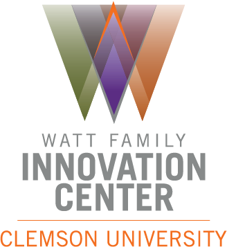
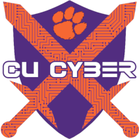

 + 
CU Cyber is partnering with the Watt Family Innovation Center to bring the students of Clemson a virtual environment where they are able to practice and perform cybersecurity attacks and countermeasures in a simulated, yet realistic environment.